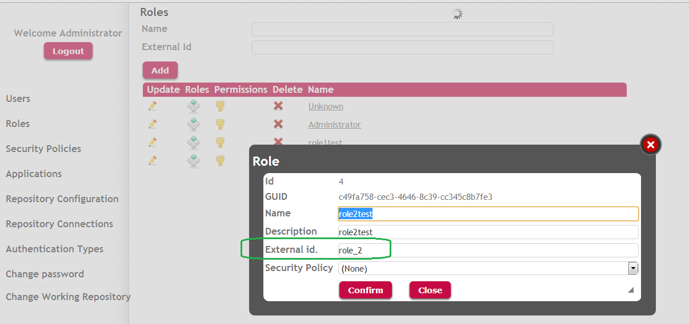
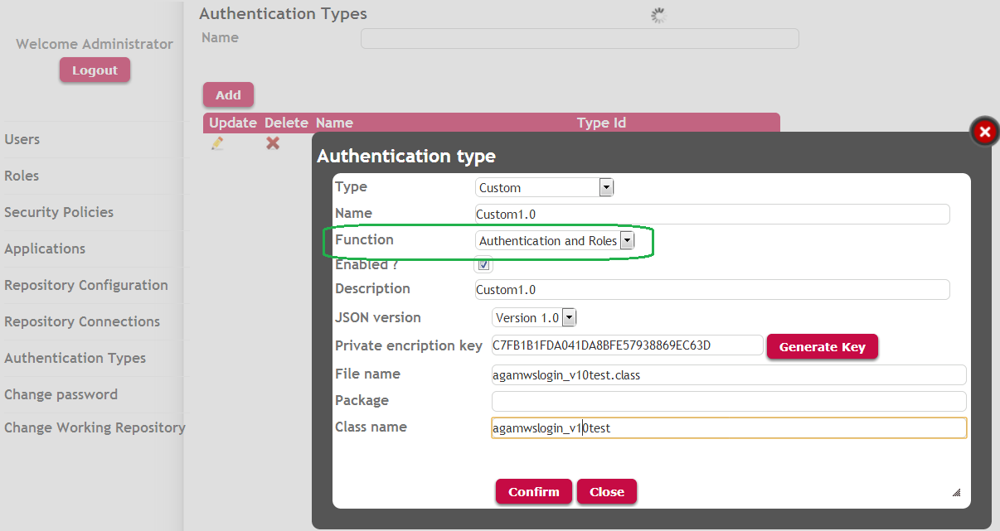

In order to solve the integration of applications regarding to security issues, use GAM External Authentication Type. Let's see here an example where GeneXus Access Manager manages Authentication and Authorization issues using data received from the external authentication program. ExampleFrom now on suppose application "A" has to integrate to application "B".
We are assuming here that the external authentication program of application B complies to GAM External Web Services Authentication Type or GAM Custom Authentication Type. The roles returned by the web service or external program of application B need to have a corresponding role in GeneXus Access Manager database of application A, so as GAM can manage Authorization. So all the roles returned by the external authentication program need to have been previously defined in GeneXus Access Manager and mapped to the external roles. The way to map GAM Roles to the roles of application B is through the ExternalId property of GAMRole object (located in GAMLibrary). Let's see step by step:1. The population of roles in GAM is done using the GAM Web Backoffice or programmatically using the GAM API. The ExternalId property of the role can be set using GAM Web Backoffice (see Figure 1.), which has to be assigned to the role Identification in application "B" database. This is the way to map application "B" roles to application "A" GAM roles in GAM repository.  Figure 1.2. Return roles in the external authentication program. This depends on the external program version which can be GAM External Authentication: version 1.0, or GAM External Authentication: version 2.0. Suppose you are implementing GAM External Authentication: version 1.0, so you have implemented a web service for authentication purposes, which complies with the 1.0 specification. The code of the web service is such that, after the user has been validated you load in a SDT variable (&GAMWSLoginOutUserRole, based on GAMWSLoginOutUserSDT.RoleItem) the roles of the user who has been authenticated. The value assigned to the RoleCode property of this variable has to be the same as the one specified in the ExternalId property for the role defined in GAM (see Figure 1). Afterwards you assign it to the collection of roles of &GAMWSLoginOut variable which is the out parameter of the web service. &GAMWSLoginOutUserRole = New() //&GAMWSLoginOutUserRole is GAMWSLoginOutUserSDT.RoleItem data type. &GAMWSLoginOutUserRole.RoleCode = "role_1" &GAMWSLoginOut.User.Roles.Add(&GAMWSLoginOutUserRol) //&GAMWSLoginOut is GAMWSLoginOutSDT data type. &GAMWSLoginOutUserRole = New() &GAMWSLoginOutUserRole.RoleCode = "role_2" //assign RoleCode property with the ExternalId given to the role in GAM &GAMWSLoginOut.User.Roles.Add(&GAMWSLoginOutUserRol) So, after a user has logged in, GAM gets his roles from the webservice Response or the external authentication program output, and maps these roles to GAM Roles using ExternalId property. 3. In application A configure GAM External Authentication Type, using GAM Web Backoffice or the GAM API. Take into account that when defining the external Authentication Type you need to specify the value "Function = Authentication and Roles", as shown in Figure 2.  Figure 2.After the login has taken place, you can obtain the roles of the logged in user by coding the following: &session = GAMSession.get(&errors) // &session is GAMSession DataType, &errors is collection of GAMError &user = GAMUser.get() // &user is GAMUser DataType. &roles = &Session.getroles(&errors) // &roles is collection of GAMRole for &role in &roles //process Roles endfor for &error in &errors //process Errors endfor Note
|
| Backlinks | |
| GAM Custom Authentication Type | GAM External Authentication Type |
| GAM External Web Services Authentication Type |